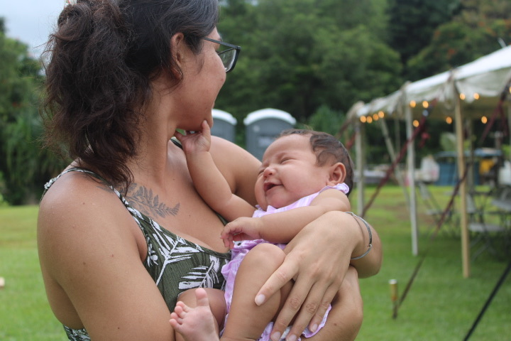

Free Breast Pumps Statewide
Waiū is being developed to gift breast pumps to participating mothers across Hawaiʻi, helping families access support wherever they live.
Project In Development
Waiū supports mothers, babies, and families through culturally grounded maternal health programs, education, storytelling, and community care.
By supporting mothers, we help build healthier families and stronger futures rooted in aloha, mālama, and ʻohana.

Waiū is being developed to gift breast pumps to participating mothers across Hawaiʻi, helping families access support wherever they live.
The Waiū app is planned as a simple storytelling and check-in tool for maternal wellness, feedback, and community-rooted learning.

Waiū
This work is growing with care: listening to families, uplifting maternal voices, and creating gentle tools that support wellness, confidence, cultural grounding, and connection.